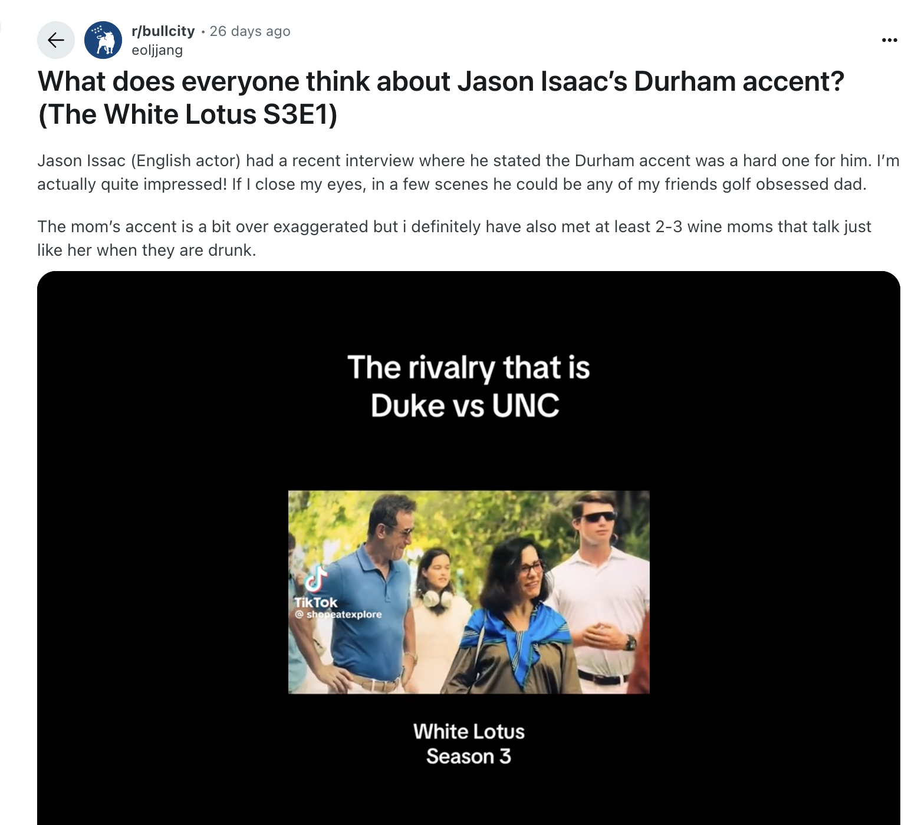
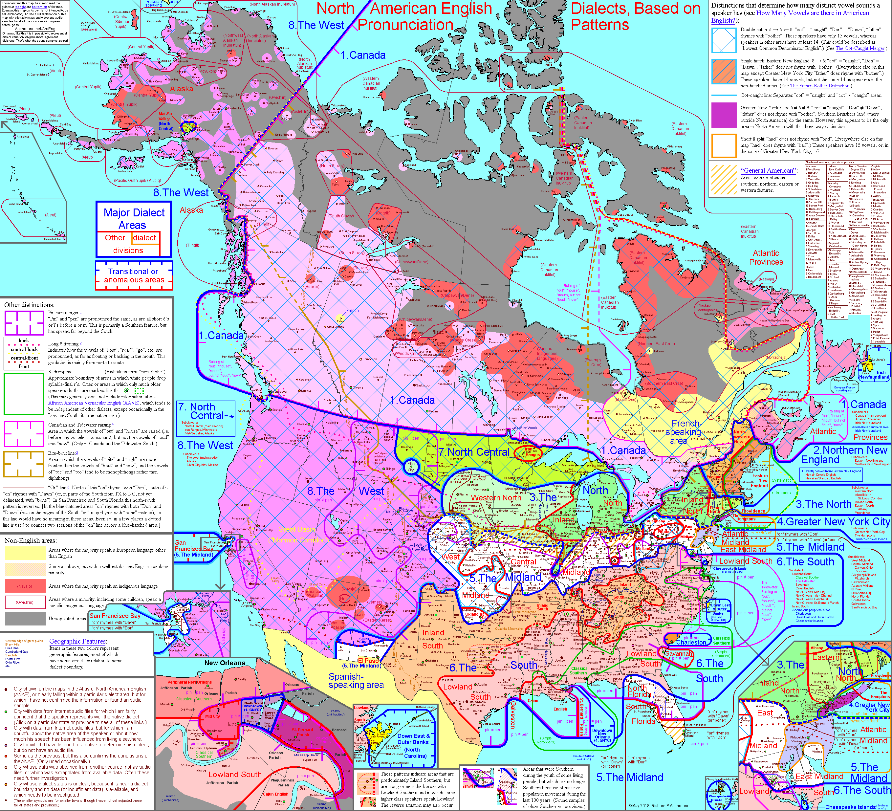

The Durham Accent
But why?
I'm from Durham, NC (sort of...)
I like accents, I guess (dat Linguistics degree, tho)
This is admittedly a little self indulgent
Also: It's so hot right now
... no really.

Brought to you by...

Let's ask Walt Wolfram:

Let's ask Walt Wolfram:
William C. Friday Distinguished University Professor at NC State University
Founding Director of the North Carolina Language and Life Project (NCLLP)
Early pioneer of the study of African American English (Black English)
Not that Wolfram
We've done over 3,500 interviews everywhere in North Carolina over the last 30 years. And no one has ever said that there is anything unique about a couple of vowels in Durham.
But maybe the dialect coach told Isaacs to focus on just a few key sounds?
Nobody after puberty can just step in and learn a dialect like that.
Dialect: A variety of language spoken by a particular group of feature, which includes differences in grammar, vocabulary, and pronunciation.
Accent: Specifically concerned with pronunciation. A difference in a way of pronouncing words.
An interesting, not 100% scientific dialect map

https://aschmann.net/AmEng/<🧼📦>
All dialects are consistent and rule-bound, and their rules can be measured and described with (yes) descriptive methods.
</🧼📦>
A selection of defining characteristics of Southern American English (SAE)
"The Drawl"
Triphthongization: Changing of a monophthong (single vowel sound) to a triphthong (triple vowel sound), as in "dressed." Diphthongization may also occur.
Monophthongization may also occur, such as in "nine."
Reflexive Dative (maybe preserved from older varieties of English?)
I'm fixin' to get me a new shirt
He's gonna catch him a big one.
It's just like using self in python?
Multiple Modals
Standard American English has strict word order and only allows one modal auxiliary per verb phrase, such as "I might go to the store."
Southern American English, on the other hand, allows for multiple modals (or modal stacking). So phrases like "I might should go to the store" are considered grammatical.
So many modals
| may could | might could | might supposed to |
| may can | might oughta | mighta used to |
| may will | might can | might woulda had oughta |
| may should | might should | oughta could |
| may supposed to | might would | better can |
| may need to | might better | should oughta |
| may used to | might had better | used to could |
| can might | musta coulda | |
| could might | would better |
In Conclusion:
Is there a "Durham Accent?": No
Is the character Timothy Ratliff speaking something similar to what might be spoken in Durham?: Maybe?
Should we have a The White Lotus Viewing Party?: Probably.